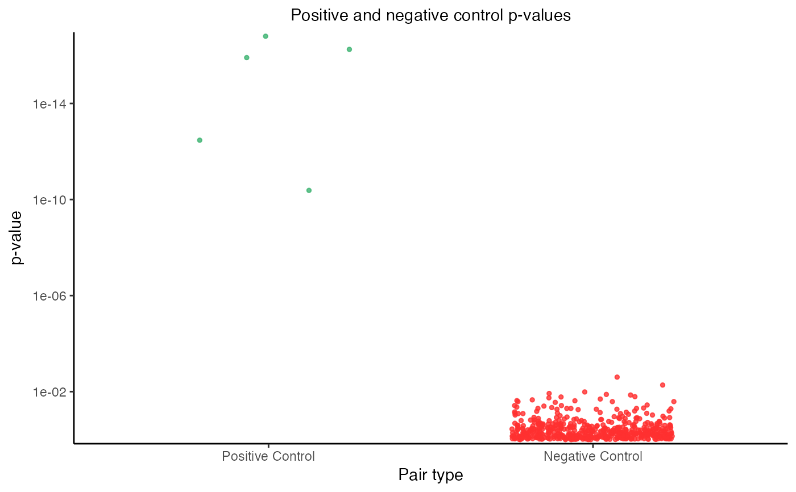

plot_run_power_check() creates a visualization of the outcome of the power check analysis. Each point in the plot corresponds to a target-response pair, with positive control pairs in the left column and negative control pairs in the right column. The vertical axis indicates the p-value of a given pair; smaller (i.e., more significant) p-values are positioned higher along this axis (p-values truncated at clip_to for visualization). The positive control p-values should be small, and in particular, smaller than the negative control p-values.
Arguments
- sceptre_object
a
sceptre_objectthat has hadrun_power_check()called on it- point_size
(optional; default
1) the size of the individual points in the plot- transparency
(optional; default
0.8) the transparency of the individual points in the plot- clip_to
(optional; default
1e-20) p-values smaller than this value are set toclip_tofor better visualization. Ifclip_to=0is used then no clipping is done.
Examples
data(highmoi_example_data)
data(grna_target_data_frame_highmoi)
# import data
sceptre_object <- import_data(
response_matrix = highmoi_example_data$response_matrix,
grna_matrix = highmoi_example_data$grna_matrix,
grna_target_data_frame = grna_target_data_frame_highmoi,
moi = "high",
extra_covariates = highmoi_example_data$extra_covariates,
response_names = highmoi_example_data$gene_names
)
positive_control_pairs <- construct_positive_control_pairs(sceptre_object)
sceptre_object |>
set_analysis_parameters(
side = "left",
positive_control_pairs = positive_control_pairs,
resampling_mechanism = "permutations",
) |>
assign_grnas(method = "thresholding") |>
run_qc() |>
run_calibration_check(
parallel = TRUE,
n_processors = 2,
n_calibration_pairs = 500,
calibration_group_size = 2
) |>
run_power_check() |>
plot_run_power_check()
#> Constructing negative control pairs. ✓
#> Generating permutation resamples. ✓
#> Running calibration_check in parallel. Change directories to /var/folders/wh/j0lkx_9d5zq75dljjxvvgb480000gn/T//RtmpLaxOUI/sceptre_logs/ and view the files calibration_check_*.out for progress updates.
#> ✓
#> Note: If you are on a Mac laptop or desktop, consider setting `parallel = TRUE` to improve speed. Otherwise, keep `parallel = FALSE`.
#>
#> Generating permutation resamples. ✓
#> Analyzing pairs containing response ENSG00000224277 (1 of 5)
#> Analyzing pairs containing response ENSG00000226772 (5 of 5)
